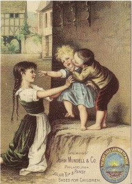
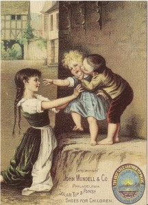
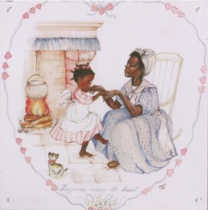

29th January 2013, 10:43 am
I have this Travel City Fit-A-Pocket Play Set by Galoob. It has the copyright date of 1987 on it. I found no instructions, stickers or box, only what you see in the pictures. I have no idea where I acquired this set. Tucked away with other kinds of stuff it has been forgotten for years.
It has been played with and is not complete as you can see by the following pictures. The Car Wash, House and Motel appear complete. the Hospital, Drive-Inn and Police Station are mostly there but have some parts missing. There are parts of two other sets. Without a parts list it is impossible for me to know for sure what is missing. So what you see is what there is. It is a unique and fun looking set. It is interesting how it all packs up into the little boxes.
It needs a good home. I am asking $19.00 plus postage for it. I do accept PayPal and I am open to offers. Contact me at rodander@frontiernet.net
Packed up to Fit-A-Pocket
25th January 2013, 10:41 pm
These are shoe related pictures and Advertisements.The following items are all NEW old stock that we purchased in 2002. They were made in the 1990′s by Victorian Gallery out of Burlington, Kansas. They are all reproductions of old pictures and are beautifully done on a very good grade of paper. There are three note card and three Lithograph Prints. I would like to get $22.00 plus shipping. Please contact me at donnaanderson@frontiernet.net. I do take Pay Pal and I am negotiable.
Hamilton Brown Shoe 5 x 7 Note Card John Mundell and Company 5 x 7 Note Card Nox em all Shoes 5 x 7 Note Card
 

C.T. & W. F. Bidwell Boots and Shoes 6 ¾ x 9 ¼ Lithograph Print

Ladies night Out 11 x 14 Lithograph Print

Fixing Dollies Shoes 11 x 14 Lithograph Print

25th January 2013, 10:15 pm
I have the following fifteen Can and Crate labels. They are reproductions of Antique Crate and Can labels that were reproduced in the 1990′s by Victorian Gallery out of Burlington, Kansas. This is NEW old stock that we purchased back in 2002. Asking price is $45.00 plus shipping . I do take Pay Pal. If you have any questions in regard to these items please contact me by e-mail donnaanderson@frontiernet.net. I am also negotiable.
25th January 2013, 10:05 pm
I purchased this beautiful doll, “Julian”, on a Paper Mache Rocking Horse, from the Victorian Collection Gallery by Cal Hasco Inc. in 1994. Julian is 25” tall, even though the catalog listed her as 30” tall. The Rocking Horse is 26 “ high by 29 “ long. She has real eye lashes. Julian has a gorgeous Hunter Green Velvet Costume with lots of lace, ribbons and satin.. She has a porcelain head, forearms and hands and the knee to foot is porcelain. The body is cloth. As you can see she is in immaculate conditon. The horse also has beautiful lace, ribbons and satin. I am asking $350.00 plus shipping, however, I am negotiable on price and I do take Pay Pal. I will be happy to answer any questions you may have. I can be contacted by e-mail donnaanderson@frontiernet.net
25th January 2013, 11:32 am
I have some NEW old stock Black Americana memorabilia for Sale. It is all in mint condition There are 13 items in the lot.
There are 6 Tin Signs:
8 ¼ by 6 Handy Helper
8 ½ by 6 Hot Cakes
9 x6 Two Girls Holding Hands
7 x 7 Playing Mama
7 x 7 Dreaming Of You
7 x 7 Happiness Warms The Heart.
1 post Card
I Love You
4 Note Cards:
5 x 7 Am De Bestest
5 x 7 Gold Metal
5 x 7 Ayers Cathartic Pills
5 x 7 J P Coats
1 gift card 3 7/8 x 2 ¼ Love’s Offering
1 Lithograph Print 6 x 9 Pillsbury’s Best
All of the items are reproductions that were made in the 1990′s by Victorian Gallery. I would like to get $50.00 plus shipping on the lot. Please e-mail me at donnaanderson@frontiernet.net if you have any questions . I do take Pay Pal
The first six items are tin signs.

This one is a post card
These next four are the 5 x 7 Note Cards
This is the gift enclosure.
This is the 6 x 9 Lithograph Print.
25th January 2013, 10:40 am
I have had this beautiful Baby Doll tucked away for years. It is a Tonka, “Hush Little Baby Doll” number 6910. The copyright date is 1990. AS you can see in the pictures it is about 22 inches tall.

This beautiful doll is clean and in nice shape. She has beautiful hair and her dress looks new. I don’t think it was ever played with much.
The instruction paper and the pacifier are included but the Baby Bottle is missing..
Also the Electronics do not work. She should have sound and movement but there is none. I would guess that an electrical connection was missed in manufacture. That is why the doll was returned to the store without being played with.
This Doll was acquired as a project that I never got around to.
The graphics on the box are great. The box is good except where someone cut off a label and where tape was used.
I am asking $16.00 plus postage for it. I do accept PayPal. I can be reached at rodander@frontiernet.net

23rd January 2013, 12:16 pm
This is the LCD action Tank Attack game with super sounds, by Tiger Electronic Toys Inc. The copy right on the Box is 1988.
Game looks very good, almost no wear. I played it a bit and it seems to work good. The problem is the base is missing.The box is in good condition with some tape marks on end. I have no instructions or papers with it. You can see by the pictures how good it looks. This would be ideal if you have one in poor condition or that doesn’t work.

These cold winter days I have been cleaning out the back room of the Lab. Being somewhat of a pack rat, it is quite full and I hate throwing things away. I am hoping that someone could use this item. I am asking $8.00 plus postage for it. I will consider offers. You can reach me at rodander@frontiernet.net. I do accept PayPal.
16th January 2013, 11:42 am
I have this new Casio DP-1 drum pad set. It was packed in a cardboard box. Brackets for attaching it to a drum stand are still sealed in their plastic bags. The instruction sheet is included. As you can see in the pictures, I removed one drum set from its bag for the pictures. 

I don’t believe anything was ever opened before. Bar code number 79767 39016 along with “made in Japan” was the only other information on the box.
I could find no date.
Instructions state it is for connecting to a Casiotone Keyboard. My old Casio keyboard did not have the right jacks to plug the Drum Pads in. If it had I probably would have given this to my Grandsons, as it is it needs a good home
I am asking $29.00 plus postage for it. I am open to offers. I accept PayPal. I can be reached at rodander@frontiernet.net
16th January 2013, 09:16 am
This is a Parker Brothers game with a 1988 copyright on the box. As you can see in the pictures below it is a neat looking game. You can play baseball with the Major League Super Star players of the 1980′s
The instructions are included. The sticker sheet is somewhat wrinkled but it is mostly complete. It looks like two or three stickers have been removed from the top edge. A few of the round ones are loose on the sheet as you can see in the picture.
There is a sealed pack of Baseball cards plus four extra cards. A Baseball Hall of Fame cartridge is included.
I played the game for a short while and not only did it seem to work good but it was fun. It doesn’t show much wear from handling. The battery cover is missing. I can also see from the picture on the box that four decorative light stands and two flag poles are missing. There is no list of what should be included. So we are back to what you see is what you get.
The box has great pictures and is complete. It shows some wear and has tape on the outside as you can see from the pictures. The inner packing has also survived. Interestingly there is still an original price tag of $99.99 still on the box.
I am asking $25.00 plus postage for it. I am open to offers and will be happy to answer any questions you have. I do accept PayPal. I can be reached by E-Mail rodander@frontiernet.net
15th January 2013, 02:43 pm
Here is another strange thing I found tucked away in my stuff. It is two Thunder Cats Kids tents Made by Winnebago Industries Inc. Here I thought Winnebago only made Motor Homes !
I have only the nylon part of the tent. The spring rods that hold it up are missing. The nylon part is the only thing I have.
The tents are made of Nylon and appear unused. They are 72 inches long, 35 inches wide, and 32 inches high at center. As you can see in the pictures there is a long zipper for the door way .
The graphics are very neat and slightly different on each tent even though the style number on both tents is 11854.
I just couldn’t throw these away. I am sure there is some clever use for them. as you can see on the label they are 1.7 Oz Nylon.
There were no boxes or instructions, no posts or rods, no stakes. I want to say again there is only the nylon tents.
I am asking $9.00 for the pair plus the postage. I am open to offers and suggestions.
I can be reached at rodander@frontiernet.net. I also accept PayPal for payment.


{kind=link}
{kind=link}
{kind=link}
{kind=link}
{kind=link}
{kind=link}
{kind=link}
{kind=link}
{kind=link}
{kind=link}
{kind=link}
{kind=link}
{kind=link}
{kind=link}
{kind=link}
{kind=link}
{kind=link}
{kind=link}
{kind=link}
{kind=link}
{kind=link}
{kind=link}
{kind=link}
{kind=link}
{kind=link}
{kind=link}
{kind=link}
{kind=link}
{kind=link}
{kind=link}
{kind=link}
{kind=link}
{kind=link}
{kind=link}
{kind=link}
{kind=link}
{kind=link}
{kind=link}
{kind=link}
{kind=link}